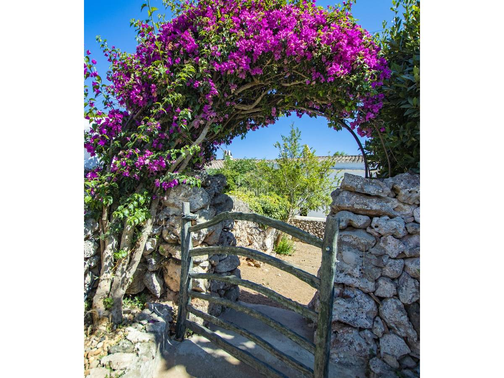

€995.000
Toraixa, Es Castell, Menorca
Open the listingDeep menorquina character: local stone, vaulted ceilings, pitched roofs, dry-stone tancas, stone oven and barn — plus a swimming pool converted from a former cistern and a valid tourist licence. 340 m² on ~1,600 m² at €995k is a heritage bargain versus sleeker coastal stock. Not board ses-castell-4739.
Opened 2 Sep 2026. Asking 995.000 € (current). Icons: 5/2 / 340 m² / 1.600 m² + Pool. Copy: main house dates to 1886; sensitively adapted; scope for refined aesthetic update (not a wreck/POR). Annexed spaces; kitchen gardens; well in boundary wall. Character-first keeper.